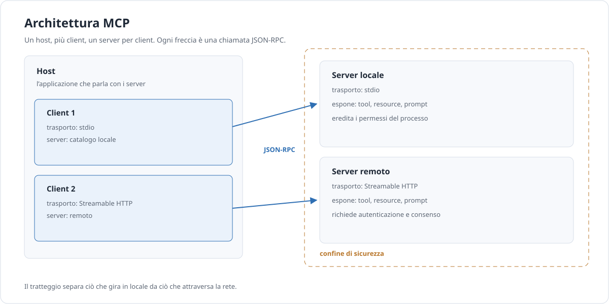

Approfondimento · AI
Server MCP
MCP è il modo standard con cui un’applicazione AI scopre e usa strumenti esterni. Non è un modello, non è un agente: è un contratto. Questa pagina spiega com’è fatto, quando conviene e come costruirne un server senza aprire buchi di sicurezza.
In breve. Un server MCP espone capacità a un host: tool che il modello può chiamare, risorse che l’applicazione può leggere, prompt che l’utente può scegliere. Il valore è il confine standard; il rischio è che quel confine venga attraversato con troppi permessi.
Che cos’è MCP
L’architettura ha tre ruoli. L’host è l’applicazione che l’utente usa: un editor, un assistente, una chat. Il client è il componente che parla con un server: ogni client è collegato a un solo server. Il server espone capacità. Un host può avere più client, quindi più server.
Il dialogo è JSON-RPC. Il server può essere locale, avviato come processo e collegato via stdio, oppure remoto, raggiunto via Streamable HTTP. Nel primo caso eredita i permessi del processo che lo avvia; nel secondo serve autenticazione e autorizzazione esplicite.
Le primitive sono tre, e la differenza sta in chi decide.
| Primitiva | Chi decide | A cosa serve | Esempio |
|---|---|---|---|
| Tool | Il modello | Eseguire un’azione o una query. | Cercare un articolo, inviare un messaggio. |
| Resource | L’applicazione | Leggere dati identificati da un URI. | catalogo://schema, un file, una pagina. |
| Prompt | L’utente | Scegliere un modello di richiesta preconfezionato. | “Riassumi questo documento”. |
JSON-RPC significa che ogni messaggio è un oggetto con un metodo, dei parametri e un identificativo. La risposta riporta lo stesso identificativo, così le due parti sanno a cosa corrisponde. Non è un protocollo di streaming di testo: è una sequenza di richieste e risposte, e questo lo rende facile da ispezionare e da proxare.
Lo stato, nella revisione 2026-07-28, non vive nella connessione: vive nelle richieste. È una scelta che semplifica il deployment — un server può essere replicato, riavviato, messo dietro un bilanciatore — ma sposta la responsabilità della sessione sull’applicazione. Se ti serve memoria tra una chiamata e l’altra, devi progettarla tu.
Vale la pena dire cosa MCP non è. Non è un formato per scrivere prompt: quelli restano testo. Non è un modello: non genera nulla. Non è un agente: non decide quando usare un tool, lo espone soltanto. Non è nemmeno un sostituto delle API: è un modo standard di presentarle a un’applicazione AI. Se confondi questi livelli, finisci per chiedere al protocollo cose che non può fare.
La revisione 2026-07-28 ha cambiato il protocollo in
modo sostanziale: è diventato stateless. Non
esiste più l’handshake initialize: ogni
richiesta porta con sé versione e capability nei
_meta. Esistono server/discover per conoscere
le capacità e subscriptions/listen per le
sottoscrizioni; le richieste avviate dal server usano un pattern
multi round-trip invece di un canale permanente. Non
è una semplificazione: è un modello diverso, più
adatto a deployment distribuiti.
Attenzione. Molti client e server usano ancora la revisione 2025-11-25. Prima di scrivere codice, verifica quale generazione supporta l’host che hai davanti: un server moderno può non essere visto da un client vecchio, e viceversa.

Quando usarlo (e quando no)
MCP non è sempre la risposta. È un’infrastruttura, e come tutte le infrastrutture ha un costo di adozione. La domanda giusta è chi deve usare la stessa capacità e con quale grado di riuso.
| Approccio | Quando usarlo | Limite |
|---|---|---|
| MCP | Più host devono usare la stessa capacità, o serve un confine standard e riutilizzabile. | Costo di implementazione e di sicurezza. |
| Function calling diretto | Una sola applicazione, pochi tool, nessun riuso previsto. | Ogni host reimplementa tutto. |
| CLI | L’agente ha già accesso alla shell e i comandi sono già scritti. | Permessi ampi, output non strutturato. |
| RAG | Servono documenti in lettura, non azioni. | Non esegue nulla e non sostituisce un’API. |
MCP conviene quando la stessa capacità è utile a più strumenti o quando vuoi separare chi espone i dati da chi li consuma. Non conviene se stai costruendo una singola applicazione con tre funzioni: in quel caso il function calling diretto è più semplice e ha meno superficie d’attacco.
C’è un costo che spesso si sottovaluta: un server MCP va scritto, testato, distribuito, aggiornato e protetto. Se lo usano due persone, quel costo difficilmente si recupera. Se lo usano duecento, o se lo usano tre strumenti diversi, il calcolo cambia. La domanda non è “è moderno?”, ma “chi lo mantiene per i prossimi due anni?”.
Un’avvertenza che vale sempre: MCP non sostituisce una buona API. Se l’API è lenta, incoerente o insicura, incapsularla in un server MCP non la migliora: aggiunge un livello. Il server è un adattatore, non una cura.
Costruire un server minimo
La SDK ufficiale Python nella versione 2.x espone la classe
MCPServer. Questo server espone due tool e una resource su
un catalogo di articoli. È volutamente piccolo: un tool, un
lavoro.
import json
import logging
from mcp.server import MCPServer
logging.basicConfig(level=logging.INFO)
log = logging.getLogger("catalogo")
mcp = MCPServer("catalogo")
ARTICOLI = {
"A-101": {"titolo": "Router e cascate", "testo": "..."},
"A-102": {"titolo": "Valutare un modello", "testo": "..."},
}
@mcp.tool()
def cerca_articoli(testo: str, limite: int = 5) -> list[dict]:
"""Cerca articoli per parola chiave. Restituisce al massimo `limite` risultati."""
testo = testo.lower().strip()
trovati = [
{"id": k, "titolo": v["titolo"]}
for k, v in ARTICOLI.items()
if testo in v["titolo"].lower()
]
log.info("ricerca %r: %d risultati", testo, len(trovati))
return trovati[:limite]
@mcp.tool()
def leggi_articolo(id: str) -> dict:
"""Legge un articolo per ID. Se l'ID non esiste, restituisce un errore strutturato."""
articolo = ARTICOLI.get(id)
if articolo is None:
return {
"errore": "articolo_non_trovato",
"id": id,
"suggerimento": "usa cerca_articoli per trovare un ID valido",
}
return {"id": id, **articolo}
@mcp.resource("catalogo://schema")
def schema_catalogo() -> str:
"""Schema del catalogo, in JSON."""
return json.dumps({
"campi": ["id", "titolo", "testo"],
"esempio_id": "A-101",
})
if __name__ == "__main__":
mcp.run(transport="stdio")Tre dettagli non sono decorativi. I docstring diventano la descrizione che il modello legge per scegliere il tool: vanno scritti come istruzioni, non come note per sviluppatori. I type hint diventano lo schema dei parametri. E i log vanno su stderr: su stdio, stdout è il canale del protocollo, e una riga di log scritta lì rompe la comunicazione.
Il server è piccolo abbastanza da essere letto in cinque minuti, ma
mostra tutti i punti che contano: due tool con docstring e type hint, una
resource con URI, un errore strutturato, i log su stderr. Se lo esegui in
locale, la prima cosa da verificare è che l’avvio non scriva
nulla su stdout. La seconda è che cerca_articoli con
una parola inesistente restituisca una lista vuota, non un errore: una
ricerca senza risultati è un risultato valido.
La configurazione lato client è un oggetto con comando, argomenti e variabili d’ambiente. I nomi dei campi variano tra client, ma la sostanza è questa:
{
"mcpServers": {
"catalogo": {
"command": "python",
"args": ["catalogo.py"],
"env": {
"CATALOGO_DB": "dati/catalogo.json"
}
}
}
}Un errore strutturato è più utile di un’eccezione generica, perché il modello può leggerlo e correggere la chiamata. Ma non deve contenere dettagli interni, stack trace o credenziali: è contenuto che finisce nel contesto.
Progettare i tool
La descrizione di un tool è parte del prompt. Se è vaga, il modello sceglie il tool sbagliato o inventa parametri. La regola è semplice: un tool, un lavoro.
| Tool | Cosa fare | Cosa evitare |
|---|---|---|
| Nome | Verbo e oggetto: cerca_articoli. |
Nomi generici come gestisci. |
| Descrizione | Dire cosa fa, quando usarlo e cosa restituisce. | Ripetere il nome o lasciare il docstring vuoto. |
| Schema | Tipi espliciti, valori ammessi, campi obbligatori. | Stringhe libere dove serve un enum. |
| Output | Limitato, paginato, con un campo per il totale. | Restituire migliaia di righe in una volta. |
| Scritture | Idempotenti, con una chiave di richiesta. | Creare duplicati a ogni retry. |
| Errori | Codice, messaggio, suggerimento. | Stack trace o dettagli interni. |
| Azioni distruttive | Richiedono approvazione umana. | Eliminare o inviare senza conferma. |
Paginare non è un dettaglio da fare dopo. Un tool che restituisce tutto il catalogo occupa il contesto, costa token e nasconde l’informazione utile. Restituisci i primi N risultati, un identificatore per continuare e il totale. Il modello può sempre chiedere la pagina successiva.
Prendi una descrizione reale e peggiorala, per vedere l’effetto. “Cerca articoli” non dice se la ricerca è per titolo, per testo, per autore, né cosa restituisce. “Cerca articoli per parola chiave nel titolo; restituisce id e titolo, al massimo cinque, ordinati per rilevanza” dice tutto ciò che serve al modello per decidere. La differenza tra le due frasi è la differenza tra un tool usato bene e un tool usato a caso.
La stessa logica vale per i nomi dei parametri. id,
limite, formato sono chiari;
param1, opzioni, dati no. Se il
modello deve indovinare, hai già perso.
Sicurezza
Due attacchi ricorrenti hanno un nome. Il confused deputy è un server che ha più permessi di chi lo chiama e li usa per conto di un altro: l’utente chiede una cosa innocua, il server la esegue con i propri privilegi e ne combina una più grande. Il token passthrough è un server che inoltra il token ricevuto a un servizio a valle senza verificarlo: il token finisce dove non doveva.
| Rischio | Mitigazione |
|---|---|
| Confused deputy | Permessi per chiamante, non per server; consenso esplicito; scope minimi. |
| Token passthrough | Non inoltrare token; usare credenziali proprie con audience corretta. |
| Accesso non autorizzato | OAuth 2.0, verifica dell’audience, scadenza breve. |
| Injection via output | Trattare l’output come non fidato; separarlo dalle istruzioni. |
| Tool troppo potenti | Un tool, un’azione; niente shell generica se basta una query. |
| Dati in eccesso | Filtrare, paginare, non restituire segreti. |
| Abuso e picchi | Rate limit, quote, timeout, audit log. |
La differenza tra server locale e remoto è sostanziale. Un server stdio gira con i permessi del processo che lo avvia: se quel processo può leggere un file, anche il server può. Un server HTTP remoto è raggiungibile da altri: senza autenticazione, chiunque può chiamarlo. Non è una differenza di configurazione, è una differenza di modello di fiducia.
Per un server remoto, OAuth 2.0 è il punto di partenza, non un dettaglio da aggiungere dopo. L’utente autorizza il client, il client ottiene un token con un’audience precisa, il server verifica il token e i suoi scope a ogni chiamata. Il consenso deve dire cosa l’utente sta autorizzando, non “accedi”. E il token non va mai inoltrato a un servizio a valle come se fosse una credenziale generica.
Attenzione. Confused deputy e token passthrough non si risolvono con una frase nel prompt. Servono controlli nel server: autorizzazione per chiamante, scope limitati, nessun inoltro di token, approvazione umana per le azioni distruttive. Il modello non è un confine di sicurezza.
Un’ultima regola: l’output di un tool è contenuto non fidato. Se un tool legge una pagina web, quella pagina può contenere istruzioni. Trattala come dati, non come comandi. Le difese lato prompt aiutano, ma il controllo vero sta nel server e nei permessi.
Testare e debuggare
MCP Inspector è lo strumento di riferimento per guardare un server dall’esterno: elenca tool, risorse e prompt, permette di chiamarli e mostra il traffico. Serve anche a verificare la compatibilità tra generazioni del protocollo:
mcp-inspector --protocol-era modern
mcp-inspector --protocol-era legacyI due comandi aprono lo stesso server con due aspettative diverse. Se funziona solo con uno, hai un problema di compatibilità da dichiarare, non da nascondere.
Oltre all’Inspector, servono test veri:
- unitari per ogni tool, con input validi e invalidi;
- di contratto sullo schema: nomi, tipi, campi obbligatori;
- di errore: ID mancante, file assente, timeout, risposta troppo grande;
- di latenza, con il 95° percentile;
- di dimensione: l’output resta sotto una soglia concordata?
Quando un client rifiuta una chiamata, la domanda è sempre la stessa: il server non risponde, risponde con un errore, o risponde con qualcosa che il client non capisce? L’Inspector separa i tre casi. Senza di lui si finisce a modificare il codice a caso, che è il modo più costoso di fare debugging.
Il caso “tool che restituisce troppo” è quello che sfugge più spesso. Un test che misura i byte o i token dell’output lo intercetta prima che il problema arrivi in produzione.
Distribuire
La scelta del trasporto decide il modello operativo. stdio è la scelta giusta per uno strumento locale: semplice, veloce, nessuna rete. Streamable HTTP è la scelta giusta per un servizio condiviso: serve autenticazione, deployment, osservabilità.
Una checklist di rilascio, in ordine di importanza:
- autenticazione e autorizzazione verificate, con scope minimi;
- nessun segreto nei log, negli errori o nelle risposte;
- rate limit e timeout configurati;
- output paginato e limitato per dimensione;
- versionamento del server e delle sue primitive;
- compatibilità dichiarata con le revisioni supportate;
- log e metriche per chiamata, senza dati personali;
- procedura di revoca e rotazione delle credenziali.
La checklist non è un documento da firmare una volta. Va riletta a ogni modifica che tocchi permessi, trasporto o forma dell’output, perché sono le tre cose che cambiano il rischio senza cambiare il codice applicativo. Se un rilascio non tocca nessuna delle tre, può bastare un controllo più leggero; se le tocca tutte, serve una revisione vera.
L’osservabilità non è un lusso: senza sapere quali tool vengono chiamati, con quale esito e in quanto tempo, non puoi né difendere né migliorare il server. Registra l’identificativo della richiesta, il tool, la durata e l’esito; non registrare il contenuto se non serve.
Un server remoto ha anche un problema di versione del deployment: se aggiorni il codice ma non la documentazione delle capacità, i client continuano a chiamare tool che non esistono. Dichiara la versione del server in una resource o in una risposta di scoperta, e cambiala quando cambia il contratto. Un numero di versione visibile vale più di un changelog che nessuno legge.
Infine, ricorda che un server MCP è un’interfaccia pubblica anche quando è interno. Cambiare il nome di un tool o il tipo di un parametro rompe i client. Tratta il contratto come tale.
Lessico minimo
- Host
- L’applicazione che l’utente usa e che ospita uno o più client MCP.
- Client
- Il componente dell’host che mantiene la connessione con un singolo server.
- Server
- Il processo o servizio che espone tool, risorse e prompt.
- Tool
- Una funzione che il modello può decidere di chiamare.
- Resource
- Un dato identificato da un URI, che l’applicazione può leggere.
- Confused deputy
- Un server con più permessi di chi lo chiama, che li usa per conto di un altro.
Fonti
- Model Context Protocol, Architecture — host, client, server e primitive.
- Model Context Protocol, Changelog 2026-07-28
— protocollo stateless,
server/discover,subscriptions/listen, multi round-trip. - Model Context Protocol, Server concepts — tool, risorse, prompt.
- Model Context Protocol, Build a server — struttura minima e trasporti.
- Model Context Protocol, Security best practices — confused deputy, token passthrough, OAuth.
- MCP Python SDK 2.x —
MCPServer, decoratori, trasporto stdio.
Fonti consultate l’11 novembre 2026. La specifica evolve: verifica la revisione supportata dal client che usi.